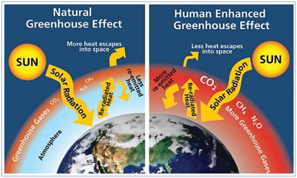
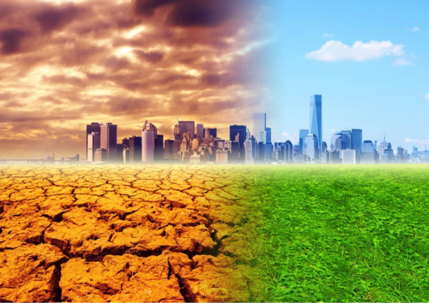
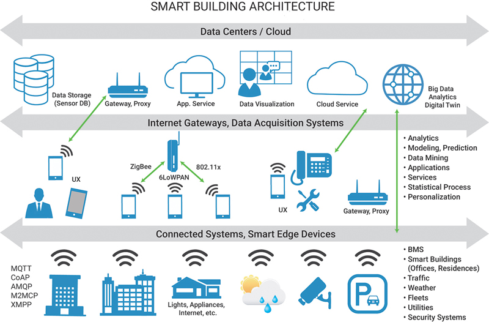
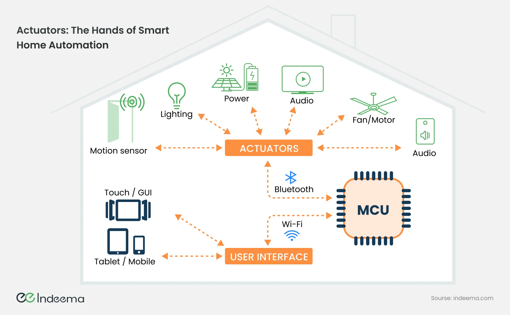

Why This Topic Matters
Energy production and consumption are the largest sources of global greenhouse gas emissions. From heating buildings to powering industries, our heavy dependence on fossil fuels continues to drive climate change.
Current Global Situation
Over 70% of global emissions come from energy-related activities. Urban areas—where buildings, transport, and infrastructure are concentrated—are major contributors. This makes energy efficiency a critical area for climate action.

The Role of Informatics
Informatics enables better tracking, analysis, and control of energy use. By leveraging smart systems and real-time data, we can optimize consumption and reduce emissions—especially in buildings and cities.
What’s Ahead in This Project
In the following sections, we’ll explore how technology—especially IoT and AI—can be applied to improve energy efficiency, monitor environmental impact, and drive smarter decisions for a sustainable future.
